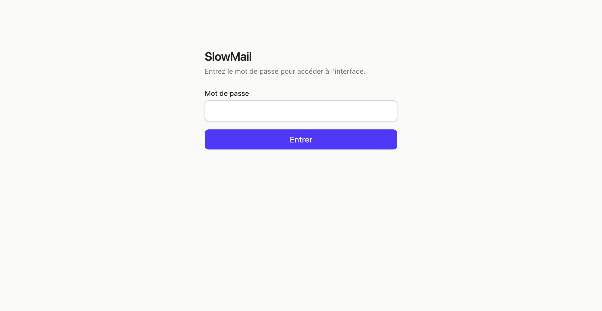
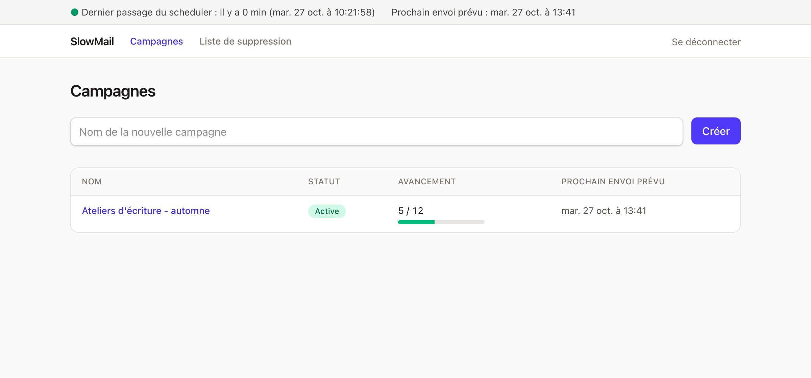

Avant de commencer
Docker est un logiciel gratuit qui fait tourner une application dans une « boîte » fermée, avec tout ce dont elle a besoin. Pour SlowMail, cela veut dire : vous n'installez ni PHP, ni base de données, ni rien d'autre. Vous installez Docker une fois, puis vous lancez SlowMail avec une commande.
Il vous faut :
- un ordinateur Mac, Windows (10 ou 11) ou Linux, que vous laisserez allumé aux heures d'envoi ;
- une boîte mail professionnelle avec accès SMTP (le serveur qui envoie vos mails). SlowMail a été éprouvé avec OVH ; l'étape 3 dit où trouver les réglages chez un autre hébergeur ;
- environ 20 minutes.
Rien ne part tant que vous ne l'avez pas décidé. SlowMail démarre avec les envois coupés, et vous ferez vos premiers essais sur vos propres adresses, pas sur de vrais contacts. Vous ne pouvez pas envoyer par erreur en suivant ces étapes.
Choisissez votre système : les commandes et les captures s'adaptent.
1Installer Docker
Sur Mac
- Ouvrez docker.com/products/docker-desktop et téléchargez Docker Desktop. Choisissez la version qui correspond à votre Mac : Apple Silicon (puces M1, M2, M3…) ou Intel. En cas de doute : menu Pomme, puis « À propos de ce Mac », la ligne « Puce » ou « Processeur » l'indique.
- Ouvrez le fichier téléchargé (
.dmg) et glissez Docker dans le dossier Applications. - Lancez Docker depuis Applications, acceptez les conditions, puis attendez que l'icône de la baleine, dans la barre de menus en haut de l'écran, cesse de bouger.
Alternative plus légère : OrbStack, qui fonctionne exactement de la même façon pour la suite. Vérifiez les conditions d'utilisation de l'outil que vous choisissez : leur gratuité dépend de l'usage.
Sur Windows
- Ouvrez docker.com/products/docker-desktop et téléchargez Docker Desktop pour Windows.
- Lancez l'installateur. Laissez cochée l'option qui utilise WSL 2 : c'est ce qui permet à Docker de fonctionner sous Windows. L'installation peut demander de redémarrer l'ordinateur.
- Lancez Docker Desktop depuis le menu Démarrer, acceptez les conditions, puis attendez que l'icône de la baleine, dans la zone de notification en bas à droite, cesse de bouger.
Si Windows indique que la virtualisation est désactivée, voir la page Dépannage.
Sur Linux
Installez Docker Engine et son plugin Compose en suivant la page officielle de votre distribution : docs.docker.com/engine/install. Elle est tenue à jour et propose, pour Ubuntu, Debian, Fedora et d'autres, une série de commandes à copier.
Ensuite, pour utiliser Docker sans écrire sudo à chaque fois, puis le démarrer avec le système :
sudo usermod -aG docker $USER
sudo systemctl enable --now dockerFermez puis rouvrez votre session pour que le changement de groupe soit pris en compte.
Ouvrir un terminal
Le terminal est une fenêtre où l'on tape des commandes. Vous n'en aurez besoin que quelques minutes.
Appuyez sur ⌘ + Espace, tapez « Terminal », puis Entrée.
Ouvrez le menu Démarrer, tapez « PowerShell », puis cliquez sur Windows PowerShell.
Appuyez sur Ctrl + Alt + T, ou cherchez « Terminal » dans vos applications.
Vérifier que Docker répond
Dans le terminal, tapez ces deux commandes (une ligne à la fois, Entrée après chaque) :
docker --version
docker compose versionChacune doit répondre par un numéro de version. Si vous lisez « command not found » ou une erreur de connexion, Docker n'est pas encore lancé ou pas installé : voir Dépannage.
2Préparer le fichier
SlowMail tient dans un seul fichier, docker-compose.yml, que vous rangerez dans un dossier slowmail. Il dit à Docker quoi lancer et contient vos réglages, mots de passe compris. Deux façons de l'obtenir :
Un formulaire de ce site produit le fichier tout rempli. Ce que vous y tapez ne quitte pas votre navigateur, et il n'y a rien à modifier à la main : vous passez ensuite directement à l'étape 4.
Si vous avez utilisé le générateur : ranger le fichier
Le fichier docker-compose.yml est dans le dossier de téléchargements de votre navigateur. Dans le terminal, créez le dossier slowmail, rangez-y le fichier et placez-vous dedans :
mkdir -p ~/slowmail
mv ~/Downloads/docker-compose.yml ~/slowmail/
cd ~/slowmail
lsmkdir -p ~/slowmail
mv "$(xdg-user-dir DOWNLOAD)/docker-compose.yml" ~/slowmail/
cd ~/slowmail
lsmkdir $HOME\slowmail
Move-Item $HOME\Downloads\docker-compose.yml $HOME\slowmail\
cd $HOME\slowmail
dirLa dernière commande doit afficher docker-compose.yml. Si le déplacement échoue (votre navigateur a demandé où enregistrer, ou il a renommé le fichier en docker-compose (1).yml), glissez le fichier à la main dans le dossier slowmail, que vous ouvrez avec open . (Mac), explorer . (Windows) ou xdg-open . (Linux). Son nom doit être exactement docker-compose.yml.
Votre fichier est prêt : passez à l'étape 4.
Sinon : partir du fichier modèle et le remplir à la main
Dans le terminal, créez le dossier et téléchargez le fichier modèle :
mkdir -p ~/slowmail
cd ~/slowmail
curl -fsSLO __SITE_URL__/telecharger/docker-compose.ymlmkdir -p ~/slowmail
cd ~/slowmail
curl -fsSLO __SITE_URL__/telecharger/docker-compose.ymlmkdir $HOME\slowmail
cd $HOME\slowmail
Invoke-WebRequest -Uri __SITE_URL__/telecharger/docker-compose.yml -OutFile docker-compose.ymlVous pouvez aussi télécharger le fichier avec votre navigateur et le ranger dans un dossier slowmail que vous aurez créé. Vérifiez alors que son nom est exactement docker-compose.yml, sans .txt à la fin.
3Remplir le fichier à la main
Votre fichier est déjà rempli : rendez-vous à l'étape 4.
Ouvrez le fichier modèle avec un éditeur de texte.
open -e docker-compose.ymlIl s'ouvre dans TextEdit. S'il affiche une barre de mise en forme (gras, italique…), faites Format, puis « Convertir au format texte » avant d'enregistrer : du texte enrichi casserait le fichier.
notepad docker-compose.ymlnano docker-compose.ymlDans nano : Ctrl + O puis Entrée pour enregistrer, Ctrl + X pour quitter.
Repérez la section À REMPLIR. Vous ne changez que ce qui se trouve entre les guillemets :
SLOWMAIL_PASSWORD: "votre-mot-de-passe-long"
MAIL_HOST: "ssl0.ovh.net"
MAIL_PORT: "465"
MAIL_SCHEME: "smtps"
MAIL_USERNAME: "contact@votre-domaine.fr"
MAIL_PASSWORD: "le-mot-de-passe-de-cette-boite"
MAIL_FROM_ADDRESS: "contact@votre-domaine.fr"
MAIL_FROM_NAME: "Camille Roche"| Ligne | Ce qu'il faut mettre |
|---|---|
SLOWMAIL_PASSWORD | Un mot de passe nouveau, long (une phrase fait très bien l'affaire), pour entrer dans SlowMail. Ne réutilisez pas un mot de passe existant. Tant qu'il est vide, personne ne peut se connecter. |
MAIL_HOST, MAIL_PORT, MAIL_SCHEME | Le serveur d'envoi de votre messagerie. Les valeurs du fichier sont celles d'OVH. Voir ci-dessous pour un autre hébergeur. |
MAIL_USERNAME | L'identifiant de votre boîte, le plus souvent son adresse complète. |
MAIL_PASSWORD | Le mot de passe de cette boîte mail (pas celui de SlowMail). |
MAIL_FROM_ADDRESS | L'adresse qui apparaîtra comme expéditeur. Elle doit être celle de la boîte, ou une adresse que votre hébergeur vous autorise à utiliser. |
MAIL_FROM_NAME | Le nom affiché à côté de l'adresse. |
Trouver les réglages SMTP d'un autre hébergeur
Cherchez dans l'aide de votre hébergeur « paramètres SMTP » ou « serveur sortant ». Vous y trouverez un nom de serveur, un port, et le type de sécurité :
- port 465, SSL/TLS : gardez
MAIL_SCHEME: "smtps"; - port 587, STARTTLS : mettez
MAIL_PORT: "587"etMAIL_SCHEME: "smtp".
Seul OVH a été essayé pour de vrai. Si votre premier envoi de test échoue, l'erreur du serveur est affichée dans SlowMail (sans votre mot de passe) : c'est presque toujours l'identifiant, le mot de passe ou le port.
Gardez-le pour vous : ne l'envoyez à personne, ne le déposez pas sur un dépôt public (GitHub, par exemple), ne le collez pas dans un forum pour demander de l'aide sans avoir effacé les lignes PASSWORD.
- Gardez les guillemets et ne changez pas l'alignement : ce fichier est sensible aux espaces en début de ligne.
- Si un mot de passe contient le signe
$, écrivez-le deux fois ($$). - Laissez
SLOWMAIL_ENABLED: "false"pour l'instant. C'est l'interrupteur général : vous le passerez à"true"au moment de vos premiers essais.
Enregistrez le fichier et fermez l'éditeur.
4Démarrer SlowMail
Dans le terminal, toujours dans le dossier slowmail :
docker compose up -dLa première fois, Docker télécharge SlowMail (quelques dizaines de mégaoctets) : comptez une minute selon votre connexion. Puis tapez :
docker compose psLa colonne STATUS doit afficher Up puis, au bout d'une minute environ, (healthy). C'est le temps que SlowMail prépare sa base et fasse son premier passage.
Sinon, patientez encore une minute et recommencez. Si cela ne change pas : Dépannage.
5Ouvrir SlowMail
Dans votre navigateur, allez à l'adresse http://localhost:8080. Entrez le mot de passe que vous avez choisi pour SlowMail (dans le générateur, ou à l'étape 3).

En haut de chaque page, un bandeau d'état vous dit si tout va bien. Pour l'instant, une ligne orange doit dire « Envois désactivés (SLOWMAIL_ENABLED=false) : aucun mail ne partira ». C'est normal et voulu.

Vérifiez la ligne « Dernier passage du scheduler : il y a 0 min » : elle prouve que le planificateur tourne. Au démarrage, attendez une minute pour la voir.
Il reste à faire un premier essai en toute sécurité, sur vos propres adresses.
Au quotidien
Toutes ces commandes se tapent dans le terminal, dans le dossier slowmail (cd ~/slowmail sur Mac et Linux, cd $HOME\slowmail sous Windows).
Ouvrir, arrêter, redémarrer
| Ouvrir l'interface | http://localhost:8080 (Docker doit être lancé) |
| Arrêter SlowMail | docker compose stop |
| Le relancer | docker compose start |
| Appliquer un changement du fichier | docker compose up -d (à refaire à chaque modification de docker-compose.yml) |
| Voir ce qu'il dit | docker compose logs --tail 50 |
Mon ordinateur s'éteint ou se met en veille
SlowMail n'envoie que lorsque l'ordinateur est allumé et que Docker tourne. Rien n'est perdu : au retour, le bandeau indique le dernier passage du planificateur, et SlowMail ne rattrape pas les envois manqués en rafale. Les créneaux passés sont replanifiés dans votre plage horaire, et le quota d'un jour manqué n'est pas cumulé. Si l'ordinateur s'éteint pendant un envoi, la ligne est marquée « À vérifier » et jamais renvoyée toute seule.
Pour que SlowMail redémarre après un redémarrage de l'ordinateur :
- Mac et Windows : dans les réglages de Docker Desktop (ou d'OrbStack), activez le lancement à l'ouverture de session. SlowMail se relance alors tout seul avec Docker.
- Linux : c'est déjà fait si vous avez lancé
sudo systemctl enable --now docker.
Pensez aussi aux réglages d'énergie de votre ordinateur : pendant votre plage d'envoi, il ne doit pas se mettre en veille.
Mettre à jour
docker compose pull
docker compose up -dLa première commande télécharge la dernière version, la seconde remplace SlowMail par elle. Vos campagnes et vos destinataires sont conservés : ils vivent dans un espace à part (un « volume » Docker), que la mise à jour ne touche pas.
Sauvegarder
Pensez à sauvegarder avant une mise à jour, et de temps en temps pendant une campagne :
docker compose exec slowmail php artisan slowmail:backup
docker compose cp slowmail:/data/backups/. ./sauvegardesVous trouvez alors un fichier daté dans le dossier sauvegardes. Copiez-le aussi ailleurs que sur cet ordinateur (clé USB, autre disque…) : une sauvegarde qui vit au même endroit que l'original ne protège pas d'une panne du disque.
Tout désinstaller
docker compose downCela arrête et supprime SlowMail, mais garde vos données. Si vous le réinstallez plus tard, tout est là.
docker compose down -v supprime la base : campagnes, destinataires, journal. C'est définitif. Faites une sauvegarde avant si vous avez le moindre doute.
Et ensuite ?
- Premiers envois : de la simulation à vos trois premiers vrais mails, sans risque.
- Bon usage : délivrabilité, désinscription et cadre légal.
- Dépannage : les problèmes qu'on rencontre le plus souvent.